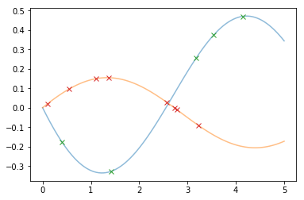
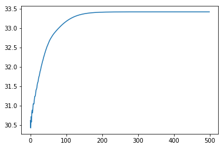

First order latent force models¶
\[\dot{x}_p(t) = -D_p x_p(t) + \sum_{r=1}^R S_{pr} g_r(t), \qquad p=1,\ldots P.\]
Basic Imports¶
[1]:
%matplotlib inline
import matplotlib
import numpy as np
import matplotlib.pyplot as plt
from scipy.integrate import odeint
np.random.seed(123)
np.set_printoptions(precision=3, suppress=True)
Simulating from the model¶
We are first going to define the model and simulate an observation from it by directly solving the model with a single driving force, \(g(t) = \cos (t)\).
[2]:
S = np.array([[-0.5],
[.2]])
D = np.array([.5, .3])
g = lambda t: np.cos(t)
# Dense set of time points to solve the model on
ttd = np.linspace(0., 5., 100)
# Time-Evolution equation
def dXdt(X, t):
# equivalent to diag(-D).dot(X) + S.dot(g)
return -D * X + S.dot(g(t))[:, 0]
# numerically solve the ODE
sol = odeint(dXdt, [0., 0.], ttd)
# subsample the time vector to create our training data
N1 = 5 # no. of samples from x(t)
N2 = 8 # no. of samples from y(t)
xind = np.sort(
np.random.choice(ttd.size, size=N1, replace=False))
yind = np.sort(
np.random.choice(ttd.size * 2 // 3, size=N2, replace=False))
t1, X = ttd[xind], sol[xind, 0]
t2, Y = ttd[yind], sol[yind, 1]
fig, ax = plt.subplots()
_ = ax.plot(ttd, sol, alpha=0.5)
_ = ax.plot(t1, X, 'x')
_ = ax.plot(t2, Y, 'x')

[3]:
from lfm_flow.kernels import LFM1_RBF
from lfm_flow.latentforcemodels import LLFM
import tensorflow as tf
def reset_session():
"""Creates a new global, interactive session in Graph-mode."""
global sess
try:
tf.reset_default_graph()
sess.close()
except:
pass
sess = tf.InteractiveSession()
reset_session()
lf_length_scales = np.array([1., ])
kern = LFM1_RBF(D, S, lf_length_scales)
lfm = LLFM(kern)
WARNING: The TensorFlow contrib module will not be included in TensorFlow 2.0.
For more information, please see:
* https://github.com/tensorflow/community/blob/master/rfcs/20180907-contrib-sunset.md
* https://github.com/tensorflow/addons
If you depend on functionality not listed there, please file an issue.
WARNING:tensorflow:From /Users/danieltait/my-venvs/lfm_tf/lib/python3.6/site-packages/tensorflow/python/framework/op_def_library.py:263: colocate_with (from tensorflow.python.framework.ops) is deprecated and will be removed in a future version.
Instructions for updating:
Colocations handled automatically by placer.
[4]:
# Temporary are ugly adding of training data to lfm object
# concatenate to single augmented time vector...
tt_aug = np.concatenate([t1, t2])
# ...and remember the shape of the original vectors
tt_aug_shape = [t1.size, t2.size]
lfm.t_input = tt_aug
lfm.t_input_shape = tt_aug_shape
# Store training data as shape (N_obs, N_replicates)
lfm.Y = tf.constant(np.concatenate([X, Y]),
dtype=np.float64)[:, None]
[5]:
# Build a tensorflow operator to return the log_likelihood
log_likelihood = lfm._build_likelihood()
# construct an optimiser
optimizer = tf.train.AdamOptimizer(learning_rate=0.01)
train_op = optimizer.minimize(-log_likelihood)
# specify no. of iterations for model fitting...
# ... and a container for the values
num_iters = 500
lls_ = np.zeros(num_iters, np.float64)
WARNING:tensorflow:From /Users/danieltait/my-venvs/lfm_tf/lib/python3.6/site-packages/tensorflow/python/ops/math_ops.py:3066: to_int32 (from tensorflow.python.ops.math_ops) is deprecated and will be removed in a future version.
Instructions for updating:
Use tf.cast instead.
[6]:
sess.run(tf.global_variables_initializer())
for i in range(num_iters):
_, lls_[i] = sess.run([train_op, log_likelihood])
fig, ax = plt.subplots()
lines = ax.plot(lls_, 'C0-')
